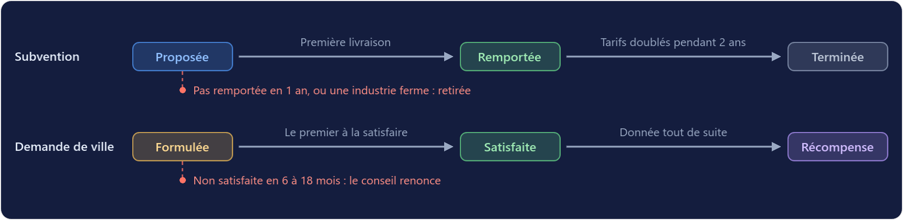

Subventions et demandes
Des offres pour tout le monde : tarifs doublés, et ce que demandent les conseils.
De temps en temps, le conseil régional propose une subvention et les conseils municipaux demandent quelque chose. Objectifs les liste sous Opportunités, et les nouvelles annoncent quand l'une est proposée, remportée ou terminée.
Subventions
- Une subvention désigne une cargaison, son origine et sa destination. Elle part d'une industrie que personne n'a desservie depuis 90 jours ou, pour les déchets, d'une ville de 400 habitants ou plus. Elle va à une industrie qui l'accepte ou, pour les marchandises, la nourriture ou les journaux, à une ville de 400 habitants ou plus (1 000 pour les voitures). Le trajet fait de 15 à 60 cases.
- Ta première livraison à une station qui atteint la destination, chargée dans une station qui atteint la source, la remporte. Les transferts en route comptent : ce qui importe, c'est où la cargaison a été chargée la première fois.
- Dès lors, tes livraisons sur ce trajet rapportent le double pendant 2 ans. Les autres sur le même trajet touchent le tarif habituel.
- Une offre que personne ne saisit expire au bout d'un an. Si une industrie à l'un des deux bouts ferme, l'offre est retirée, et une subvention déjà remportée prend fin avec elle.
- Tant qu'il y en a moins de 2 proposées, chaque mois apporte 12% de chances d'en voir une nouvelle.


Demandes des villes
Un conseil municipal demande quelque chose qui convient à sa ville, avant une date limite. Une ville a une demande au plus, et sa fenêtre l'affiche sous Demandes et récompenses ; les grandes villes demandent plus souvent.
| Demande | Demandée par | Satisfaite par | Récompense, l'une de |
|---|---|---|---|
| Liaison voyageurs | Villes de 700 habitants ou plus | Les premiers passagers transportés vers une ville distante de 15 à 60 cases, de 200 habitants ou plus, que personne ne relie encore. Entre deux villes de 1 500 ou plus, le conseil peut vouloir un train. | un an de droits de transport exclusifs +25 de note auprès du conseil |
| Approvisionnement | Villes de 400 habitants ou plus | Des marchandises ou de la nourriture (la demande précise lesquelles) livrées en ville : environ 2.5 unités par mois pour 100 habitants, sur toute sa durée. | six mois de croissance rapide une aide de 50 000 $ |
| Visiteurs | Villes avec une attraction | Des passagers livrés à une station qui atteint l'attraction : environ 4 par mois pour 100 habitants, sur toute sa durée. | une aide de 50 000 $ +25 de note auprès du conseil |
| Service | Villes où quelqu'un a une station | Toutes tes stations en ville notées 60% ou plus à 12 fins de mois de suite. Une fin de mois en dessous remet le compte à zéro. | un an de stations et de dépôts à moitié prix +25 de note auprès du conseil |
- Une demande laisse de 6 à 18 mois, une demande de service 18. Jusqu'à 2 peuvent être ouvertes à la fois sur la carte, et chaque mois apporte 12% de chances d'en voir une nouvelle.
- La progression de chaque entreprise compte séparément, et la première à y arriver l'emporte. La récompense est fixée quand le conseil fait sa demande, et affichée avec elle.
- La fenêtre Objectifs montre où tu en es et où en est le meilleur rival, avec un bouton qui montre la ville.
Récompenses
- +25 sur ta note auprès du conseil.
- Une aide de 50 000 $.
- Droits de transport exclusifs pendant un an : les stations des autres entreprises en ville ne reçoivent ni nouveaux passagers ni nouvelle cargaison, mais les livraisons en ville rapportent toujours. Ils prennent fin plus tôt si leur détenteur fait faillite.
- Stations et dépôts à moitié prix pendant un an, partout où cette ville est la plus proche à moins de 18 cases.
- Un boom de la construction : la ville grandit vite pendant 180 jours, comme quand tu finances des bâtiments.